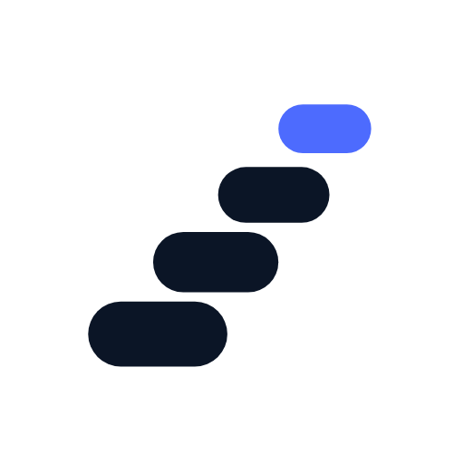

Leave durable markers; the next session finds its way.
Cairn is persistent cross-session memory for the DeepSeek Harness, packaged as the @chenhw7/dsh-memory profile bundle. Facts, preferences, corrections, and lessons survive across sessions and restarts — your agent starts every conversation already knowing what mattered last time.
dsh plugin add --profile web @chenhw7/dsh-memoryFacts, preferences, and conventions stored in a durable backend with a 200-row rolling audit log. Every write answers who, when, and why.
survives restartsGlobal memories cross every project. Project memories are per-repo and auto-detected. User memories follow your profile across repos. No bleed, no loss.
auto-detectedLatin word tokens plus CJK unigrams and bigrams. Pinned entries surface ahead of equal-relevance matches. Evaluated in CI against a fixed golden set — success@5 = 100%, MRR = 0.902.
measured, not vibesA background distillation pass extracts durable facts from explicit remember-intent, corrections, and verified failure streaks — but models only write suggested entries. Human confirmation makes them effective.
How often does this project move? Judge from the repo itself. This panel reads the project's real history the moment you open the page — the latest commits on main, plus per-day commit counts and line churn across the whole project.